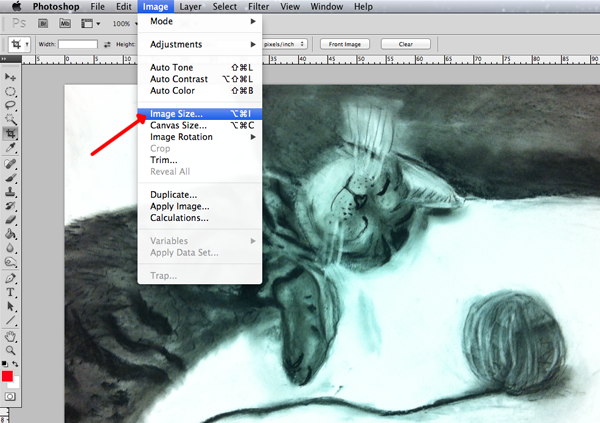
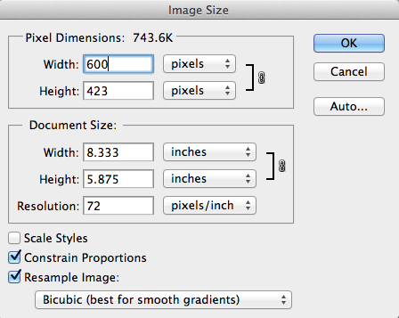
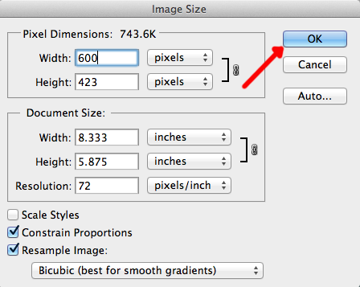
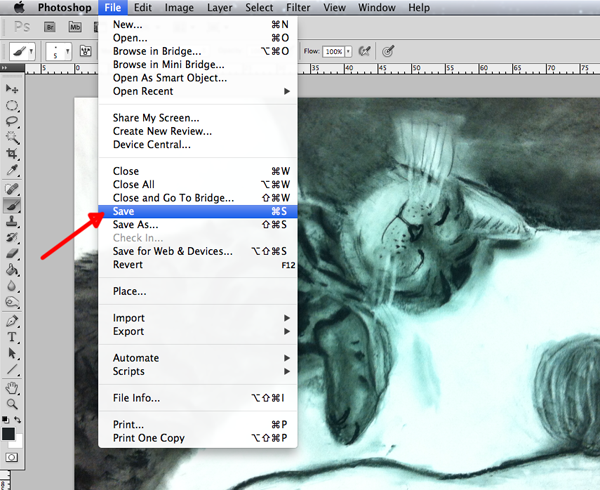
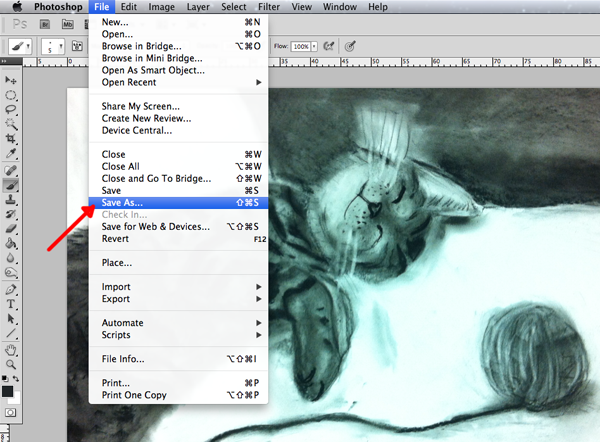
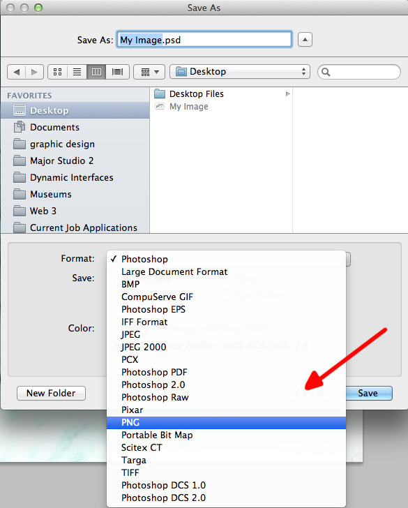
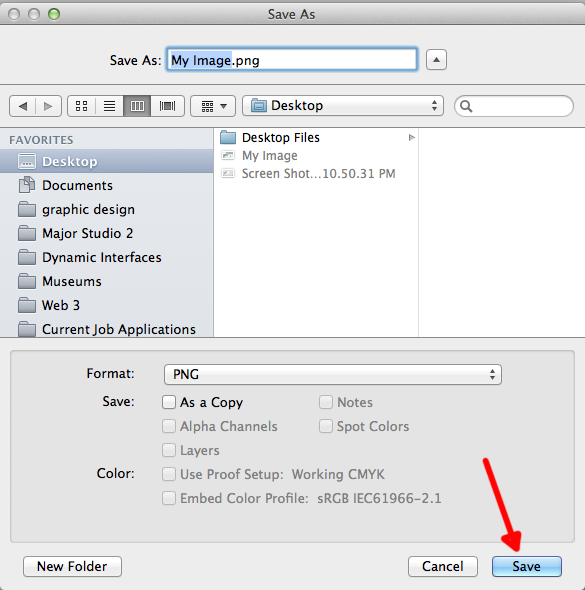

How to Resize an Image in Photoshop
- Open the File.
- Find "Image Size" in the Menu Bar
- Under "Image" in the Menu Bar, click "Image Size."
- 
- Change the image size.
- Change the numbers in the Pixel Dimensions (width and height) or Document Size (width, height and resolution).
- 
- Hit "OK."
- Click the blue "OK" button (return).
- 
- Save the file.
Same file type
- If you want your image to remain the same file type, then go to "File" in the Menu Bar and click "Save" ("Command" + "s").
- 
Different file type
- If you wish to save your image as a different file type, then go to "File" in the Menu Bar and click "Save As..." ("Command" + [shift] + "S").
- 
- Select your desired file format from the drop down menu.
- 
- Press the "Save" button (return).
- 